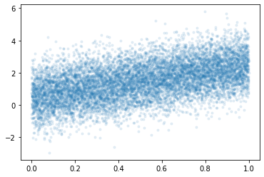
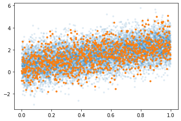
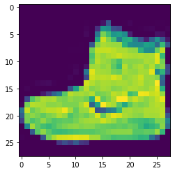
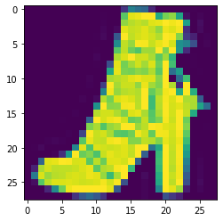

import tensorflow as tf
import matplotlib.pyplot as plt
import numpy as np
import tensorflow.experimental.numpy as tnp9주차-5월 02일 (2)
빅데이터분석특강
- toc:false
- branch: master
- badges: true
- comments: true
- author: 심재인
import
tf.config.experimental.list_physical_devices()2022-05-09 16:55:02.512547: I tensorflow/stream_executor/cuda/cuda_gpu_executor.cc:939] successful NUMA node read from SysFS had negative value (-1), but there must be at least one NUMA node, so returning NUMA node zero[PhysicalDevice(name='/physical_device:CPU:0', device_type='CPU'),
PhysicalDevice(name='/physical_device:GPU:0', device_type='GPU')]import graphviz
def gv(s): return graphviz.Source('digraph G{ rankdir="LR"'+ s + ';}')중간고사 관련 잡담
중간고사 3번문제
- 특이한모형: 오버핏이 일어날 수 없는 모형이다. - 유의미한 coef: 상수항(bias), \(\cos(t)\)의 계수, \(\cos(2t)\)의 계수, \(\cos(5t)\)의 계수. - 유의미하지 않은 coef: \(\cos(3t)\)의 계수, \(\cos(4t)\)의 계수 - 유의미하지 않은 계수는 \(n%\)이 커질수록 0으로 추정된다 = \(\cos(3t)\)와 \(\cos(5t)\)는 사용자가 임의로 제외하지 않아도 결국 모형에서 알아서 제거된다 = overfit이 일어나지 않는다. 모형이 알아서 유의미한 변수만 뽑아서 fit하는 느낌
- 3번문제는 overfit이 일어나지 않는다. 이러한 신기한 일이 일어나는 이유는 모든 설명변수가 직교하기 때문임. - 이런 모형의 장점: overfit이 일어날 위험이 없으므로 train/test로 나누어 학습할 이유가 없다. (샘플만 버리는 꼴, test에 빼둔 observation까지 모아서 학습해 \(\beta\)를 좀 더 정확히 추론하는게 차라리 더 이득) - 이러한 모형에서 할일: 추정된 계수들이 0인지 아닌지만 test하면 된다. (이것을 유의성검정이라고 한다)
- 직교기저의 예시 - 빨강과 파랑을 255,255만큼 섞으면 보라색이 된다. - 빨강과 파랑과 노랑을 각각 255,255,255만큼 섞으면 검은색이 된다. - 임의의 어떠한 색도 빨강,파랑,노랑의 조합으로 표현가능하다. 즉 \(\text{color}= \text{red}*\beta_1 + \text{blue}*\beta_2 + \text{yellow}*\beta_3\) 이다. - (빨,파,노)는 색을 표현하는 basis이다. (적절한 \(\beta_1,\beta_2,\beta_3\)을 구하기만 하면 임의의 색도 표현가능) - (빨,보,노)역시 색을 표현하는 basis라 볼 수 있다. (파란색이 필요할때 보라색-빨간색을 하면되니까) - (빨,보,검)역시 색을 표현하는 basis라 볼 수 있다. (파란색이 필요하면 보라색-빨간색을 하면되고, 노란색이 필요하면 검정색-보라색을 하면 되니까) - (빨,파,노)는 직교기저이다.
- 3번에서 알아둘 것: (1) 직교기저의 개념 (추후 재설명) (2) 임의의 색을 표현하려면 3개의 basis가 필요함
중간고사 1-(3)번 문제
- 그림을 그려보자.
_x= tf.constant(np.arange(1,10001)/10000)
_y= tnp.random.randn(10000) + (0.5 + 2*_x)
plt.plot(_x,_y,'.',alpha=0.1)
- 저것 꼭 10000개 다 모아서 loss계산해야할까?
plt.plot(_x,_y,'.',alpha=0.1)
plt.plot(_x[::10],_y[::10],'.')
- 대충 이정도만 모아서 해도 비슷하지 않을까? \(\to\) 해보자!
경사하강법과 확률적경사하강법
ver1: 모든 샘플을 사용하여 slope계산
- 단순회귀분석에서 샘플 10개 관측: \((x_1,y_1),\dots,(x_{10},y_{10})\).
(epoch1) \(loss=\sum_{i=1}^{10}(y_i-\beta_0-\beta_1x_i)^2 \quad \to \quad slope \quad \to \quad update\)
(epoch2) \(loss=\sum_{i=1}^{10}(y_i-\beta_0-\beta_1x_i)^2 \quad \to \quad slope \quad \to \quad update\)
…
ver2: 하나의 샘플만 사용하여 slope계산
(epoch1) - \(loss=(y_1-\beta_0-\beta_1x_1)^2 \quad \to \quad slope \quad \to \quad update\) - \(loss=(y_2-\beta_0-\beta_1x_2)^2 \quad \to \quad slope \quad \to \quad update\) - … - \(loss=(y_{10}-\beta_0-\beta_1x_{10})^2 \quad \to \quad slope \quad \to \quad update\)
(epoch2) - \(loss=(y_1-\beta_0-\beta_1x_1)^2 \quad \to \quad slope \quad \to \quad update\) - \(loss=(y_2-\beta_0-\beta_1x_2)^2 \quad \to \quad slope \quad \to \quad update\) - … - \(loss=(y_{10}-\beta_0-\beta_1x_{10})^2 \quad \to \quad slope \quad \to \quad update\)
…
ver3: \(m(\leq n)\)개의 샘플만 사용하여 slope계산
\(m=3\)이라고 하자.
(epoch1) - \(loss=\sum_{i=1}^{3}(y_i-\beta_0-\beta_1x_i)^2 \quad \to \quad slope \quad \to \quad update\) - \(loss=\sum_{i=4}^{6}(y_i-\beta_0-\beta_1x_i)^2 \quad \to \quad slope \quad \to \quad update\) - \(loss=\sum_{i=7}^{9}(y_i-\beta_0-\beta_1x_i)^2 \quad \to \quad slope \quad \to \quad update\) - \(loss=(y_{10}-\beta_0-\beta_1x_{10})^2 \quad \to \quad slope \quad \to \quad update\)
(epoch2) - \(loss=\sum_{i=1}^{3}(y_i-\beta_0-\beta_1x_i)^2 \quad \to \quad slope \quad \to \quad update\) - \(loss=\sum_{i=4}^{6}(y_i-\beta_0-\beta_1x_i)^2 \quad \to \quad slope \quad \to \quad update\) - \(loss=\sum_{i=7}^{9}(y_i-\beta_0-\beta_1x_i)^2 \quad \to \quad slope \quad \to \quad update\) - \(loss=(y_{10}-\beta_0-\beta_1x_{10})^2 \quad \to \quad slope \quad \to \quad update\)
…
용어의 정리
옛날 (좀 더 엄밀)
- ver1: gradient descent, batch gradient descent
- ver2: stochastic gradient descent
- ver3: mini-batch gradient descent, mini-batch stochastic gradient descent
요즘
- ver1: gradient descent
- ver2: stochastic gradient descent with batch size = 1
- ver3: stochastic gradient descent - https://www.deeplearningbook.org/contents/optimization.html, 알고리즘 8-1 참고.
note: 이렇게 많이 쓰는 이유? ver1,2는 사실상 없는 방법이므로
ver1,2,3 이외에 좀 더 지저분한 것들이 있다.
- ver2,3에서 샘플을 셔플할 수도 있다.
- ver3에서 일부 샘플이 학습에 참여 안하는 버전도 있다.
- 개인적 생각: 크게3개정도만 알면 괜찮고 나머지는 그렇게 유의미하지 않아보인다.
Discussion
- 핵심개념 - 메모리사용량: ver1 > ver3 > ver2 - 계산속도: ver1 > ver3 > ver2 - local-min에 갇힘: ver1 > ver3 > ver2
- 본질: GPU 메모리가 한정되어 있어서 ver1을 쓰지는 못한다. GPU 메모리를 가장 적게쓰는것은 ver2인데 이것은 너무 불안정하다.
- 틀리진 않지만 어색한 블로그 정리 내용들 - 경사하강법은 종종 국소최소점에 갇히는 문제가 있다. 이를 해결하기 위해서 등장한 방법이 확률적 경사하강법이다. –> 영 틀린말은 아니지만 그걸 의도하고 만든건 아님 - 경사하강법은 계산시간이 오래걸린다. 계산을 빠르게 하기 위해서 등장한 방법이 확률적 경사하강법이다. –> 1회 업데이트는 빠르게 계산함. 하지만 그것이 최적의 \(\beta\)를 빠르게 얻을 수 있다는 의미는 아님
fashion_mnist 모듈
tf.keras.datasets.fashion_mnist.load_data()
- tf.keras.datasets.fashion_mnist.load_data 의 리턴값 조사
tf.keras.datasets.fashion_mnist.load_data??Signature: tf.keras.datasets.fashion_mnist.load_data() Source: @keras_export('keras.datasets.fashion_mnist.load_data') def load_data(): """Loads the Fashion-MNIST dataset. This is a dataset of 60,000 28x28 grayscale images of 10 fashion categories, along with a test set of 10,000 images. This dataset can be used as a drop-in replacement for MNIST. The classes are: | Label | Description | |:-----:|-------------| | 0 | T-shirt/top | | 1 | Trouser | | 2 | Pullover | | 3 | Dress | | 4 | Coat | | 5 | Sandal | | 6 | Shirt | | 7 | Sneaker | | 8 | Bag | | 9 | Ankle boot | Returns: Tuple of NumPy arrays: `(x_train, y_train), (x_test, y_test)`. **x_train**: uint8 NumPy array of grayscale image data with shapes `(60000, 28, 28)`, containing the training data. **y_train**: uint8 NumPy array of labels (integers in range 0-9) with shape `(60000,)` for the training data. **x_test**: uint8 NumPy array of grayscale image data with shapes (10000, 28, 28), containing the test data. **y_test**: uint8 NumPy array of labels (integers in range 0-9) with shape `(10000,)` for the test data. Example: ```python (x_train, y_train), (x_test, y_test) = fashion_mnist.load_data() assert x_train.shape == (60000, 28, 28) assert x_test.shape == (10000, 28, 28) assert y_train.shape == (60000,) assert y_test.shape == (10000,) ``` License: The copyright for Fashion-MNIST is held by Zalando SE. Fashion-MNIST is licensed under the [MIT license]( https://github.com/zalandoresearch/fashion-mnist/blob/master/LICENSE). """ dirname = os.path.join('datasets', 'fashion-mnist') base = 'https://storage.googleapis.com/tensorflow/tf-keras-datasets/' files = [ 'train-labels-idx1-ubyte.gz', 'train-images-idx3-ubyte.gz', 't10k-labels-idx1-ubyte.gz', 't10k-images-idx3-ubyte.gz' ] paths = [] for fname in files: paths.append(get_file(fname, origin=base + fname, cache_subdir=dirname)) with gzip.open(paths[0], 'rb') as lbpath: y_train = np.frombuffer(lbpath.read(), np.uint8, offset=8) with gzip.open(paths[1], 'rb') as imgpath: x_train = np.frombuffer( imgpath.read(), np.uint8, offset=16).reshape(len(y_train), 28, 28) with gzip.open(paths[2], 'rb') as lbpath: y_test = np.frombuffer(lbpath.read(), np.uint8, offset=8) with gzip.open(paths[3], 'rb') as imgpath: x_test = np.frombuffer( imgpath.read(), np.uint8, offset=16).reshape(len(y_test), 28, 28) return (x_train, y_train), (x_test, y_test) File: ~/anaconda3/envs/py310/lib/python3.10/site-packages/keras/datasets/fashion_mnist.py Type: function
데이터생성 및 탐색
- tf.keras.datasets.fashion_mnist.load_data()를 이용한 데이터 생성
(x_train, y_train), (x_test, y_test) = tf.keras.datasets.fashion_mnist.load_data()Downloading data from https://storage.googleapis.com/tensorflow/tf-keras-datasets/train-labels-idx1-ubyte.gz
32768/29515 [=================================] - 0s 2us/step
40960/29515 [=========================================] - 0s 2us/step
Downloading data from https://storage.googleapis.com/tensorflow/tf-keras-datasets/train-images-idx3-ubyte.gz
26427392/26421880 [==============================] - 1s 0us/step
26435584/26421880 [==============================] - 1s 0us/step
Downloading data from https://storage.googleapis.com/tensorflow/tf-keras-datasets/t10k-labels-idx1-ubyte.gz
16384/5148 [===============================================================================================] - 0s 0us/step
Downloading data from https://storage.googleapis.com/tensorflow/tf-keras-datasets/t10k-images-idx3-ubyte.gz
4423680/4422102 [==============================] - 0s 0us/step
4431872/4422102 [==============================] - 0s 0us/step- 차원확인
x_train.shape, y_train.shape, x_test.shape,y_test.shape((60000, 28, 28), (60000,), (10000, 28, 28), (10000,))- 60000은 obs숫자인듯
- (28,28)은 28픽셀,28픽셀을 의미하는듯
- train/test는 6:1로 나눈것 같음
- 첫번째 obs
plt.imshow(x_train[0])<matplotlib.image.AxesImage at 0x7fe5d0202620>
y_train[0]9- 첫번쨰 obs에 대응하는 라벨
- 첫번째 obs와 동일한 라벨을 가지는 그림을 찾아보자.
np.where(y_train==9)(array([ 0, 11, 15, ..., 59932, 59970, 59978]),)y_train[11]9plt.imshow(x_train[11])<matplotlib.image.AxesImage at 0x7fe5d00646a0>
데이터구조
- \({\bf X}\): (n,28,28)
- \({\bf y}\): (n,) , \(y=0,1,2,3,\dots,9\)
예제1
데이터 정리
- y=0,1에 대응하는 이미지만 정리하자. (우리가 배운건 로지스틱이니까)
y= y_train[(y_train==0) | (y_train==1)].reshape(-1,1)
X= x_train[(y_train==0) | (y_train==1)].reshape(-1,784)
yy= y_test[(y_test==0) | (y_test==1)].reshape(-1,1)
XX= x_test[(y_test==0) | (y_test==1)].reshape(-1,784)X.shape, y.shape, XX.shape, yy.shape((12000, 784), (12000, 1), (2000, 784), (2000, 1))풀이1: 은닉층을 포함한 신경망 // epochs=100
#collapse
gv('''
splines=line
subgraph cluster_1{
style=filled;
color=lightgrey;
"x1"
"x2"
".."
"x784"
label = "Layer 0"
}
subgraph cluster_2{
style=filled;
color=lightgrey;
"x1" -> "node1"
"x2" -> "node1"
".." -> "node1"
"x784" -> "node1"
"x1" -> "node2"
"x2" -> "node2"
".." -> "node2"
"x784" -> "node2"
"x1" -> "..."
"x2" -> "..."
".." -> "..."
"x784" -> "..."
"x1" -> "node30"
"x2" -> "node30"
".." -> "node30"
"x784" -> "node30"
label = "Layer 1: relu"
}
subgraph cluster_3{
style=filled;
color=lightgrey;
"node1" -> "y"
"node2" -> "y"
"..." -> "y"
"node30" -> "y"
label = "Layer 2: sigmoid"
}
''')ExecutableNotFound: failed to execute PosixPath('dot'), make sure the Graphviz executables are on your systems' PATH<graphviz.sources.Source at 0x7fe56859de10>tf.random.set_seed(43052)
net = tf.keras.Sequential()
net.add(tf.keras.layers.Dense(30,activation='relu'))
net.add(tf.keras.layers.Dense(1,activation='sigmoid'))
net.compile(optimizer='sgd',loss=tf.losses.binary_crossentropy)
net.fit(X,y,epochs=100,batch_size=12000)Epoch 1/100
1/1 [==============================] - 0s 492ms/step - loss: 220.9145
Epoch 2/100
1/1 [==============================] - 0s 3ms/step - loss: 6800.3174
Epoch 3/100
1/1 [==============================] - 0s 3ms/step - loss: 0.7045
Epoch 4/100
1/1 [==============================] - 0s 3ms/step - loss: 0.7012
Epoch 5/100
1/1 [==============================] - 0s 3ms/step - loss: 0.7004
Epoch 6/100
1/1 [==============================] - 0s 3ms/step - loss: 0.6997
Epoch 7/100
1/1 [==============================] - 0s 3ms/step - loss: 0.6991
Epoch 8/100
1/1 [==============================] - 0s 3ms/step - loss: 0.6985
Epoch 9/100
1/1 [==============================] - 0s 3ms/step - loss: 0.6979
Epoch 10/100
1/1 [==============================] - 0s 3ms/step - loss: 0.6976
Epoch 11/100
1/1 [==============================] - 0s 3ms/step - loss: 0.6973
Epoch 12/100
1/1 [==============================] - 0s 3ms/step - loss: 0.6970
Epoch 13/100
1/1 [==============================] - 0s 3ms/step - loss: 0.6968
Epoch 14/100
1/1 [==============================] - 0s 3ms/step - loss: 0.6966
Epoch 15/100
1/1 [==============================] - 0s 3ms/step - loss: 0.6964
Epoch 16/100
1/1 [==============================] - 0s 3ms/step - loss: 0.6962
Epoch 17/100
1/1 [==============================] - 0s 3ms/step - loss: 0.6961
Epoch 18/100
1/1 [==============================] - 0s 3ms/step - loss: 0.6959
Epoch 19/100
1/1 [==============================] - 0s 3ms/step - loss: 0.6958
Epoch 20/100
1/1 [==============================] - 0s 3ms/step - loss: 0.6956
Epoch 21/100
1/1 [==============================] - 0s 3ms/step - loss: 0.6955
Epoch 22/100
1/1 [==============================] - 0s 3ms/step - loss: 0.6953
Epoch 23/100
1/1 [==============================] - 0s 3ms/step - loss: 0.6952
Epoch 24/100
1/1 [==============================] - 0s 3ms/step - loss: 0.6951
Epoch 25/100
1/1 [==============================] - 0s 3ms/step - loss: 0.6949
Epoch 26/100
1/1 [==============================] - 0s 3ms/step - loss: 0.6948
Epoch 27/100
1/1 [==============================] - 0s 3ms/step - loss: 0.6947
Epoch 28/100
1/1 [==============================] - 0s 3ms/step - loss: 0.6946
Epoch 29/100
1/1 [==============================] - 0s 3ms/step - loss: 0.6945
Epoch 30/100
1/1 [==============================] - 0s 3ms/step - loss: 0.6944
Epoch 31/100
1/1 [==============================] - 0s 3ms/step - loss: 0.6943
Epoch 32/100
1/1 [==============================] - 0s 3ms/step - loss: 0.6942
Epoch 33/100
1/1 [==============================] - 0s 3ms/step - loss: 0.6942
Epoch 34/100
1/1 [==============================] - 0s 3ms/step - loss: 0.6941
Epoch 35/100
1/1 [==============================] - 0s 3ms/step - loss: 0.6940
Epoch 36/100
1/1 [==============================] - 0s 3ms/step - loss: 0.6940
Epoch 37/100
1/1 [==============================] - 0s 3ms/step - loss: 0.6939
Epoch 38/100
1/1 [==============================] - 0s 4ms/step - loss: 0.6939
Epoch 39/100
1/1 [==============================] - 0s 3ms/step - loss: 0.6938
Epoch 40/100
1/1 [==============================] - 0s 3ms/step - loss: 0.6937
Epoch 41/100
1/1 [==============================] - 0s 3ms/step - loss: 0.6937
Epoch 42/100
1/1 [==============================] - 0s 3ms/step - loss: 0.6936
Epoch 43/100
1/1 [==============================] - 0s 3ms/step - loss: 0.6936
Epoch 44/100
1/1 [==============================] - 0s 3ms/step - loss: 0.6935
Epoch 45/100
1/1 [==============================] - 0s 3ms/step - loss: 0.6935
Epoch 46/100
1/1 [==============================] - 0s 3ms/step - loss: 0.6934
Epoch 47/100
1/1 [==============================] - 0s 3ms/step - loss: 0.6934
Epoch 48/100
1/1 [==============================] - 0s 3ms/step - loss: 0.6934
Epoch 49/100
1/1 [==============================] - 0s 3ms/step - loss: 0.6933
Epoch 50/100
1/1 [==============================] - 0s 3ms/step - loss: 0.6933
Epoch 51/100
1/1 [==============================] - 0s 3ms/step - loss: 0.6933
Epoch 52/100
1/1 [==============================] - 0s 3ms/step - loss: 0.6933
Epoch 53/100
1/1 [==============================] - 0s 3ms/step - loss: 0.6933
Epoch 54/100
1/1 [==============================] - 0s 3ms/step - loss: 0.6933
Epoch 55/100
1/1 [==============================] - 0s 3ms/step - loss: 0.6933
Epoch 56/100
1/1 [==============================] - 0s 3ms/step - loss: 0.6933
Epoch 57/100
1/1 [==============================] - 0s 3ms/step - loss: 0.6933
Epoch 58/100
1/1 [==============================] - 0s 3ms/step - loss: 0.6933
Epoch 59/100
1/1 [==============================] - 0s 3ms/step - loss: 0.6933
Epoch 60/100
1/1 [==============================] - 0s 3ms/step - loss: 0.6933
Epoch 61/100
1/1 [==============================] - 0s 3ms/step - loss: 0.6933
Epoch 62/100
1/1 [==============================] - 0s 3ms/step - loss: 0.6933
Epoch 63/100
1/1 [==============================] - 0s 3ms/step - loss: 0.6933
Epoch 64/100
1/1 [==============================] - 0s 3ms/step - loss: 0.6933
Epoch 65/100
1/1 [==============================] - 0s 3ms/step - loss: 0.6933
Epoch 66/100
1/1 [==============================] - 0s 3ms/step - loss: 0.6933
Epoch 67/100
1/1 [==============================] - 0s 5ms/step - loss: 0.6933
Epoch 68/100
1/1 [==============================] - 0s 3ms/step - loss: 0.6932
Epoch 69/100
1/1 [==============================] - 0s 3ms/step - loss: 0.6932
Epoch 70/100
1/1 [==============================] - 0s 3ms/step - loss: 0.6932
Epoch 71/100
1/1 [==============================] - 0s 3ms/step - loss: 0.6932
Epoch 72/100
1/1 [==============================] - 0s 3ms/step - loss: 0.6932
Epoch 73/100
1/1 [==============================] - 0s 3ms/step - loss: 0.6932
Epoch 74/100
1/1 [==============================] - 0s 3ms/step - loss: 0.6932
Epoch 75/100
1/1 [==============================] - 0s 3ms/step - loss: 0.6932
Epoch 76/100
1/1 [==============================] - 0s 3ms/step - loss: 0.6932
Epoch 77/100
1/1 [==============================] - 0s 3ms/step - loss: 0.6932
Epoch 78/100
1/1 [==============================] - 0s 3ms/step - loss: 0.6932
Epoch 79/100
1/1 [==============================] - 0s 3ms/step - loss: 0.6932
Epoch 80/100
1/1 [==============================] - 0s 3ms/step - loss: 0.6932
Epoch 81/100
1/1 [==============================] - 0s 3ms/step - loss: 0.6932
Epoch 82/100
1/1 [==============================] - 0s 3ms/step - loss: 0.6932
Epoch 83/100
1/1 [==============================] - 0s 4ms/step - loss: 0.6932
Epoch 84/100
1/1 [==============================] - 0s 3ms/step - loss: 0.6932
Epoch 85/100
1/1 [==============================] - 0s 3ms/step - loss: 0.6932
Epoch 86/100
1/1 [==============================] - 0s 3ms/step - loss: 0.6932
Epoch 87/100
1/1 [==============================] - 0s 2ms/step - loss: 0.6932
Epoch 88/100
1/1 [==============================] - 0s 2ms/step - loss: 0.6932
Epoch 89/100
1/1 [==============================] - 0s 3ms/step - loss: 0.6932
Epoch 90/100
1/1 [==============================] - 0s 3ms/step - loss: 0.6932
Epoch 91/100
1/1 [==============================] - 0s 2ms/step - loss: 0.6932
Epoch 92/100
1/1 [==============================] - 0s 3ms/step - loss: 0.6932
Epoch 93/100
1/1 [==============================] - 0s 2ms/step - loss: 0.6932
Epoch 94/100
1/1 [==============================] - 0s 2ms/step - loss: 0.6932
Epoch 95/100
1/1 [==============================] - 0s 4ms/step - loss: 0.6932
Epoch 96/100
1/1 [==============================] - 0s 2ms/step - loss: 0.6932
Epoch 97/100
1/1 [==============================] - 0s 2ms/step - loss: 0.6932
Epoch 98/100
1/1 [==============================] - 0s 2ms/step - loss: 0.6932
Epoch 99/100
1/1 [==============================] - 0s 5ms/step - loss: 0.6932
Epoch 100/100
1/1 [==============================] - 0s 3ms/step - loss: 0.6932<keras.callbacks.History at 0x7fe568414cd0>np.mean((net(X)>0.5) == y)0.5000833333333333np.mean((net(XX)>0.5) == yy)0.5풀이2: 옵티마이저 개선
tf.random.set_seed(43052)
net = tf.keras.Sequential()
net.add(tf.keras.layers.Dense(30,activation='relu'))
net.add(tf.keras.layers.Dense(1,activation='sigmoid'))
net.compile(optimizer='adam',loss=tf.losses.binary_crossentropy)
net.fit(X,y,epochs=100,batch_size=12000)Epoch 1/100
1/1 [==============================] - 0s 154ms/step - loss: 220.9145
Epoch 2/100
1/1 [==============================] - 0s 3ms/step - loss: 88.9451
Epoch 3/100
1/1 [==============================] - 0s 4ms/step - loss: 7.5899
Epoch 4/100
1/1 [==============================] - 0s 3ms/step - loss: 33.7523
Epoch 5/100
1/1 [==============================] - 0s 3ms/step - loss: 40.2278
Epoch 6/100
1/1 [==============================] - 0s 3ms/step - loss: 28.9657
Epoch 7/100
1/1 [==============================] - 0s 3ms/step - loss: 16.5118
Epoch 8/100
1/1 [==============================] - 0s 3ms/step - loss: 9.4905
Epoch 9/100
1/1 [==============================] - 0s 3ms/step - loss: 6.2025
Epoch 10/100
1/1 [==============================] - 0s 3ms/step - loss: 5.2417
Epoch 11/100
1/1 [==============================] - 0s 3ms/step - loss: 5.5173
Epoch 12/100
1/1 [==============================] - 0s 3ms/step - loss: 6.5902
Epoch 13/100
1/1 [==============================] - 0s 3ms/step - loss: 7.8607
Epoch 14/100
1/1 [==============================] - 0s 3ms/step - loss: 8.5884
Epoch 15/100
1/1 [==============================] - 0s 3ms/step - loss: 8.3990
Epoch 16/100
1/1 [==============================] - 0s 3ms/step - loss: 7.4674
Epoch 17/100
1/1 [==============================] - 0s 3ms/step - loss: 6.2580
Epoch 18/100
1/1 [==============================] - 0s 3ms/step - loss: 5.1273
Epoch 19/100
1/1 [==============================] - 0s 3ms/step - loss: 4.2381
Epoch 20/100
1/1 [==============================] - 0s 3ms/step - loss: 3.6032
Epoch 21/100
1/1 [==============================] - 0s 3ms/step - loss: 3.1860
Epoch 22/100
1/1 [==============================] - 0s 3ms/step - loss: 2.9232
Epoch 23/100
1/1 [==============================] - 0s 3ms/step - loss: 2.7559
Epoch 24/100
1/1 [==============================] - 0s 3ms/step - loss: 2.6420
Epoch 25/100
1/1 [==============================] - 0s 3ms/step - loss: 2.5490
Epoch 26/100
1/1 [==============================] - 0s 3ms/step - loss: 2.4612
Epoch 27/100
1/1 [==============================] - 0s 3ms/step - loss: 2.3617
Epoch 28/100
1/1 [==============================] - 0s 3ms/step - loss: 2.2378
Epoch 29/100
1/1 [==============================] - 0s 3ms/step - loss: 2.0873
Epoch 30/100
1/1 [==============================] - 0s 3ms/step - loss: 1.9117
Epoch 31/100
1/1 [==============================] - 0s 3ms/step - loss: 1.7239
Epoch 32/100
1/1 [==============================] - 0s 3ms/step - loss: 1.5408
Epoch 33/100
1/1 [==============================] - 0s 3ms/step - loss: 1.3663
Epoch 34/100
1/1 [==============================] - 0s 3ms/step - loss: 1.2210
Epoch 35/100
1/1 [==============================] - 0s 3ms/step - loss: 1.1035
Epoch 36/100
1/1 [==============================] - 0s 3ms/step - loss: 1.0208
Epoch 37/100
1/1 [==============================] - 0s 3ms/step - loss: 0.9766
Epoch 38/100
1/1 [==============================] - 0s 3ms/step - loss: 0.9628
Epoch 39/100
1/1 [==============================] - 0s 3ms/step - loss: 0.9717
Epoch 40/100
1/1 [==============================] - 0s 3ms/step - loss: 0.9883
Epoch 41/100
1/1 [==============================] - 0s 3ms/step - loss: 1.0039
Epoch 42/100
1/1 [==============================] - 0s 3ms/step - loss: 1.0156
Epoch 43/100
1/1 [==============================] - 0s 3ms/step - loss: 1.0181
Epoch 44/100
1/1 [==============================] - 0s 3ms/step - loss: 1.0067
Epoch 45/100
1/1 [==============================] - 0s 3ms/step - loss: 0.9808
Epoch 46/100
1/1 [==============================] - 0s 3ms/step - loss: 0.9443
Epoch 47/100
1/1 [==============================] - 0s 3ms/step - loss: 0.9019
Epoch 48/100
1/1 [==============================] - 0s 3ms/step - loss: 0.8571
Epoch 49/100
1/1 [==============================] - 0s 3ms/step - loss: 0.8146
Epoch 50/100
1/1 [==============================] - 0s 3ms/step - loss: 0.7768
Epoch 51/100
1/1 [==============================] - 0s 3ms/step - loss: 0.7489
Epoch 52/100
1/1 [==============================] - 0s 3ms/step - loss: 0.7294
Epoch 53/100
1/1 [==============================] - 0s 3ms/step - loss: 0.7186
Epoch 54/100
1/1 [==============================] - 0s 3ms/step - loss: 0.7124
Epoch 55/100
1/1 [==============================] - 0s 3ms/step - loss: 0.7080
Epoch 56/100
1/1 [==============================] - 0s 3ms/step - loss: 0.7044
Epoch 57/100
1/1 [==============================] - 0s 3ms/step - loss: 0.7002
Epoch 58/100
1/1 [==============================] - 0s 3ms/step - loss: 0.6949
Epoch 59/100
1/1 [==============================] - 0s 3ms/step - loss: 0.6884
Epoch 60/100
1/1 [==============================] - 0s 3ms/step - loss: 0.6806
Epoch 61/100
1/1 [==============================] - 0s 3ms/step - loss: 0.6715
Epoch 62/100
1/1 [==============================] - 0s 3ms/step - loss: 0.6615
Epoch 63/100
1/1 [==============================] - 0s 3ms/step - loss: 0.6510
Epoch 64/100
1/1 [==============================] - 0s 3ms/step - loss: 0.6404
Epoch 65/100
1/1 [==============================] - 0s 3ms/step - loss: 0.6302
Epoch 66/100
1/1 [==============================] - 0s 3ms/step - loss: 0.6209
Epoch 67/100
1/1 [==============================] - 0s 3ms/step - loss: 0.6127
Epoch 68/100
1/1 [==============================] - 0s 4ms/step - loss: 0.6060
Epoch 69/100
1/1 [==============================] - 0s 3ms/step - loss: 0.6006
Epoch 70/100
1/1 [==============================] - 0s 3ms/step - loss: 0.5963
Epoch 71/100
1/1 [==============================] - 0s 3ms/step - loss: 0.5924
Epoch 72/100
1/1 [==============================] - 0s 3ms/step - loss: 0.5888
Epoch 73/100
1/1 [==============================] - 0s 3ms/step - loss: 0.5853
Epoch 74/100
1/1 [==============================] - 0s 3ms/step - loss: 0.5816
Epoch 75/100
1/1 [==============================] - 0s 4ms/step - loss: 0.5778
Epoch 76/100
1/1 [==============================] - 0s 3ms/step - loss: 0.5736
Epoch 77/100
1/1 [==============================] - 0s 3ms/step - loss: 0.5691
Epoch 78/100
1/1 [==============================] - 0s 4ms/step - loss: 0.5644
Epoch 79/100
1/1 [==============================] - 0s 3ms/step - loss: 0.5595
Epoch 80/100
1/1 [==============================] - 0s 4ms/step - loss: 0.5547
Epoch 81/100
1/1 [==============================] - 0s 3ms/step - loss: 0.5501
Epoch 82/100
1/1 [==============================] - 0s 3ms/step - loss: 0.5457
Epoch 83/100
1/1 [==============================] - 0s 3ms/step - loss: 0.5417
Epoch 84/100
1/1 [==============================] - 0s 3ms/step - loss: 0.5379
Epoch 85/100
1/1 [==============================] - 0s 3ms/step - loss: 0.5343
Epoch 86/100
1/1 [==============================] - 0s 4ms/step - loss: 0.5309
Epoch 87/100
1/1 [==============================] - 0s 3ms/step - loss: 0.5276
Epoch 88/100
1/1 [==============================] - 0s 3ms/step - loss: 0.5242
Epoch 89/100
1/1 [==============================] - 0s 3ms/step - loss: 0.5208
Epoch 90/100
1/1 [==============================] - 0s 3ms/step - loss: 0.5174
Epoch 91/100
1/1 [==============================] - 0s 3ms/step - loss: 0.5140
Epoch 92/100
1/1 [==============================] - 0s 3ms/step - loss: 0.5107
Epoch 93/100
1/1 [==============================] - 0s 3ms/step - loss: 0.5075
Epoch 94/100
1/1 [==============================] - 0s 3ms/step - loss: 0.5044
Epoch 95/100
1/1 [==============================] - 0s 3ms/step - loss: 0.5014
Epoch 96/100
1/1 [==============================] - 0s 3ms/step - loss: 0.4986
Epoch 97/100
1/1 [==============================] - 0s 3ms/step - loss: 0.4960
Epoch 98/100
1/1 [==============================] - 0s 3ms/step - loss: 0.4935
Epoch 99/100
1/1 [==============================] - 0s 3ms/step - loss: 0.4909
Epoch 100/100
1/1 [==============================] - 0s 3ms/step - loss: 0.4885<keras.callbacks.History at 0x7fe5401346a0>np.mean((net(X)>0.5) == y)0.98125np.mean((net(XX)>0.5) == yy)0.977풀이3: 컴파일시 metrics=[‘accuracy’] 추가
tf.random.set_seed(43052)
net = tf.keras.Sequential()
net.add(tf.keras.layers.Dense(30,activation='relu'))
net.add(tf.keras.layers.Dense(1,activation='sigmoid'))
net.compile(optimizer='adam',loss=tf.losses.binary_crossentropy,metrics=['accuracy'])
net.fit(X,y,epochs=100,batch_size=12000)Epoch 1/100
1/1 [==============================] - 0s 169ms/step - loss: 220.9145 - accuracy: 0.5000
Epoch 2/100
1/1 [==============================] - 0s 3ms/step - loss: 88.9451 - accuracy: 0.5073
Epoch 3/100
1/1 [==============================] - 0s 3ms/step - loss: 7.5899 - accuracy: 0.8208
Epoch 4/100
1/1 [==============================] - 0s 4ms/step - loss: 33.7523 - accuracy: 0.5972
Epoch 5/100
1/1 [==============================] - 0s 4ms/step - loss: 40.2278 - accuracy: 0.5723
Epoch 6/100
1/1 [==============================] - 0s 4ms/step - loss: 28.9657 - accuracy: 0.6442
Epoch 7/100
1/1 [==============================] - 0s 3ms/step - loss: 16.5118 - accuracy: 0.8061
Epoch 8/100
1/1 [==============================] - 0s 3ms/step - loss: 9.4905 - accuracy: 0.8947
Epoch 9/100
1/1 [==============================] - 0s 3ms/step - loss: 6.2025 - accuracy: 0.9355
Epoch 10/100
1/1 [==============================] - 0s 5ms/step - loss: 5.2417 - accuracy: 0.9404
Epoch 11/100
1/1 [==============================] - 0s 3ms/step - loss: 5.5173 - accuracy: 0.9270
Epoch 12/100
1/1 [==============================] - 0s 3ms/step - loss: 6.5902 - accuracy: 0.9021
Epoch 13/100
1/1 [==============================] - 0s 3ms/step - loss: 7.8607 - accuracy: 0.8788
Epoch 14/100
1/1 [==============================] - 0s 3ms/step - loss: 8.5884 - accuracy: 0.8647
Epoch 15/100
1/1 [==============================] - 0s 3ms/step - loss: 8.3990 - accuracy: 0.8664
Epoch 16/100
1/1 [==============================] - 0s 3ms/step - loss: 7.4674 - accuracy: 0.8793
Epoch 17/100
1/1 [==============================] - 0s 3ms/step - loss: 6.2580 - accuracy: 0.8982
Epoch 18/100
1/1 [==============================] - 0s 3ms/step - loss: 5.1273 - accuracy: 0.9156
Epoch 19/100
1/1 [==============================] - 0s 3ms/step - loss: 4.2381 - accuracy: 0.9302
Epoch 20/100
1/1 [==============================] - 0s 3ms/step - loss: 3.6032 - accuracy: 0.9426
Epoch 21/100
1/1 [==============================] - 0s 3ms/step - loss: 3.1860 - accuracy: 0.9509
Epoch 22/100
1/1 [==============================] - 0s 3ms/step - loss: 2.9232 - accuracy: 0.9551
Epoch 23/100
1/1 [==============================] - 0s 4ms/step - loss: 2.7559 - accuracy: 0.9574
Epoch 24/100
1/1 [==============================] - 0s 3ms/step - loss: 2.6420 - accuracy: 0.9594
Epoch 25/100
1/1 [==============================] - 0s 3ms/step - loss: 2.5490 - accuracy: 0.9599
Epoch 26/100
1/1 [==============================] - 0s 3ms/step - loss: 2.4612 - accuracy: 0.9603
Epoch 27/100
1/1 [==============================] - 0s 3ms/step - loss: 2.3617 - accuracy: 0.9608
Epoch 28/100
1/1 [==============================] - 0s 3ms/step - loss: 2.2378 - accuracy: 0.9612
Epoch 29/100
1/1 [==============================] - 0s 3ms/step - loss: 2.0873 - accuracy: 0.9619
Epoch 30/100
1/1 [==============================] - 0s 3ms/step - loss: 1.9117 - accuracy: 0.9630
Epoch 31/100
1/1 [==============================] - 0s 3ms/step - loss: 1.7239 - accuracy: 0.9641
Epoch 32/100
1/1 [==============================] - 0s 3ms/step - loss: 1.5408 - accuracy: 0.9657
Epoch 33/100
1/1 [==============================] - 0s 3ms/step - loss: 1.3663 - accuracy: 0.9670
Epoch 34/100
1/1 [==============================] - 0s 3ms/step - loss: 1.2210 - accuracy: 0.9685
Epoch 35/100
1/1 [==============================] - 0s 3ms/step - loss: 1.1035 - accuracy: 0.9688
Epoch 36/100
1/1 [==============================] - 0s 4ms/step - loss: 1.0208 - accuracy: 0.9696
Epoch 37/100
1/1 [==============================] - 0s 3ms/step - loss: 0.9766 - accuracy: 0.9705
Epoch 38/100
1/1 [==============================] - 0s 3ms/step - loss: 0.9628 - accuracy: 0.9708
Epoch 39/100
1/1 [==============================] - 0s 3ms/step - loss: 0.9717 - accuracy: 0.9715
Epoch 40/100
1/1 [==============================] - 0s 3ms/step - loss: 0.9883 - accuracy: 0.9706
Epoch 41/100
1/1 [==============================] - 0s 3ms/step - loss: 1.0039 - accuracy: 0.9699
Epoch 42/100
1/1 [==============================] - 0s 3ms/step - loss: 1.0156 - accuracy: 0.9685
Epoch 43/100
1/1 [==============================] - 0s 4ms/step - loss: 1.0181 - accuracy: 0.9681
Epoch 44/100
1/1 [==============================] - 0s 4ms/step - loss: 1.0067 - accuracy: 0.9686
Epoch 45/100
1/1 [==============================] - 0s 3ms/step - loss: 0.9808 - accuracy: 0.9693
Epoch 46/100
1/1 [==============================] - 0s 3ms/step - loss: 0.9443 - accuracy: 0.9703
Epoch 47/100
1/1 [==============================] - 0s 3ms/step - loss: 0.9019 - accuracy: 0.9711
Epoch 48/100
1/1 [==============================] - 0s 3ms/step - loss: 0.8571 - accuracy: 0.9722
Epoch 49/100
1/1 [==============================] - 0s 3ms/step - loss: 0.8146 - accuracy: 0.9737
Epoch 50/100
1/1 [==============================] - 0s 4ms/step - loss: 0.7768 - accuracy: 0.9743
Epoch 51/100
1/1 [==============================] - 0s 3ms/step - loss: 0.7489 - accuracy: 0.9753
Epoch 52/100
1/1 [==============================] - 0s 3ms/step - loss: 0.7294 - accuracy: 0.9759
Epoch 53/100
1/1 [==============================] - 0s 3ms/step - loss: 0.7186 - accuracy: 0.9767
Epoch 54/100
1/1 [==============================] - 0s 3ms/step - loss: 0.7124 - accuracy: 0.9774
Epoch 55/100
1/1 [==============================] - 0s 3ms/step - loss: 0.7080 - accuracy: 0.9776
Epoch 56/100
1/1 [==============================] - 0s 3ms/step - loss: 0.7044 - accuracy: 0.9777
Epoch 57/100
1/1 [==============================] - 0s 4ms/step - loss: 0.7002 - accuracy: 0.9776
Epoch 58/100
1/1 [==============================] - 0s 3ms/step - loss: 0.6949 - accuracy: 0.9778
Epoch 59/100
1/1 [==============================] - 0s 3ms/step - loss: 0.6884 - accuracy: 0.9779
Epoch 60/100
1/1 [==============================] - 0s 3ms/step - loss: 0.6806 - accuracy: 0.9784
Epoch 61/100
1/1 [==============================] - 0s 3ms/step - loss: 0.6715 - accuracy: 0.9786
Epoch 62/100
1/1 [==============================] - 0s 3ms/step - loss: 0.6615 - accuracy: 0.9786
Epoch 63/100
1/1 [==============================] - 0s 4ms/step - loss: 0.6510 - accuracy: 0.9784
Epoch 64/100
1/1 [==============================] - 0s 3ms/step - loss: 0.6404 - accuracy: 0.9786
Epoch 65/100
1/1 [==============================] - 0s 3ms/step - loss: 0.6302 - accuracy: 0.9787
Epoch 66/100
1/1 [==============================] - 0s 3ms/step - loss: 0.6209 - accuracy: 0.9791
Epoch 67/100
1/1 [==============================] - 0s 3ms/step - loss: 0.6127 - accuracy: 0.9787
Epoch 68/100
1/1 [==============================] - 0s 3ms/step - loss: 0.6060 - accuracy: 0.9791
Epoch 69/100
1/1 [==============================] - 0s 3ms/step - loss: 0.6006 - accuracy: 0.9792
Epoch 70/100
1/1 [==============================] - 0s 3ms/step - loss: 0.5963 - accuracy: 0.9795
Epoch 71/100
1/1 [==============================] - 0s 3ms/step - loss: 0.5924 - accuracy: 0.9793
Epoch 72/100
1/1 [==============================] - 0s 3ms/step - loss: 0.5888 - accuracy: 0.9791
Epoch 73/100
1/1 [==============================] - 0s 3ms/step - loss: 0.5853 - accuracy: 0.9790
Epoch 74/100
1/1 [==============================] - 0s 3ms/step - loss: 0.5816 - accuracy: 0.9793
Epoch 75/100
1/1 [==============================] - 0s 3ms/step - loss: 0.5778 - accuracy: 0.9794
Epoch 76/100
1/1 [==============================] - 0s 3ms/step - loss: 0.5736 - accuracy: 0.9795
Epoch 77/100
1/1 [==============================] - 0s 3ms/step - loss: 0.5691 - accuracy: 0.9794
Epoch 78/100
1/1 [==============================] - 0s 3ms/step - loss: 0.5644 - accuracy: 0.9794
Epoch 79/100
1/1 [==============================] - 0s 3ms/step - loss: 0.5595 - accuracy: 0.9796
Epoch 80/100
1/1 [==============================] - 0s 3ms/step - loss: 0.5547 - accuracy: 0.9796
Epoch 81/100
1/1 [==============================] - 0s 5ms/step - loss: 0.5501 - accuracy: 0.9798
Epoch 82/100
1/1 [==============================] - 0s 3ms/step - loss: 0.5457 - accuracy: 0.9800
Epoch 83/100
1/1 [==============================] - 0s 3ms/step - loss: 0.5417 - accuracy: 0.9800
Epoch 84/100
1/1 [==============================] - 0s 3ms/step - loss: 0.5379 - accuracy: 0.9804
Epoch 85/100
1/1 [==============================] - 0s 3ms/step - loss: 0.5343 - accuracy: 0.9807
Epoch 86/100
1/1 [==============================] - 0s 2ms/step - loss: 0.5309 - accuracy: 0.9807
Epoch 87/100
1/1 [==============================] - 0s 3ms/step - loss: 0.5276 - accuracy: 0.9807
Epoch 88/100
1/1 [==============================] - 0s 2ms/step - loss: 0.5242 - accuracy: 0.9808
Epoch 89/100
1/1 [==============================] - 0s 3ms/step - loss: 0.5208 - accuracy: 0.9808
Epoch 90/100
1/1 [==============================] - 0s 3ms/step - loss: 0.5174 - accuracy: 0.9811
Epoch 91/100
1/1 [==============================] - 0s 2ms/step - loss: 0.5140 - accuracy: 0.9812
Epoch 92/100
1/1 [==============================] - 0s 5ms/step - loss: 0.5107 - accuracy: 0.9812
Epoch 93/100
1/1 [==============================] - 0s 3ms/step - loss: 0.5075 - accuracy: 0.9813
Epoch 94/100
1/1 [==============================] - 0s 2ms/step - loss: 0.5044 - accuracy: 0.9814
Epoch 95/100
1/1 [==============================] - 0s 2ms/step - loss: 0.5014 - accuracy: 0.9816
Epoch 96/100
1/1 [==============================] - 0s 2ms/step - loss: 0.4986 - accuracy: 0.9815
Epoch 97/100
1/1 [==============================] - 0s 2ms/step - loss: 0.4960 - accuracy: 0.9815
Epoch 98/100
1/1 [==============================] - 0s 2ms/step - loss: 0.4935 - accuracy: 0.9812
Epoch 99/100
1/1 [==============================] - 0s 4ms/step - loss: 0.4909 - accuracy: 0.9812
Epoch 100/100
1/1 [==============================] - 0s 3ms/step - loss: 0.4885 - accuracy: 0.9812<keras.callbacks.History at 0x7fe5401ee830>net.evaluate(X,y)375/375 [==============================] - 0s 862us/step - loss: 0.4860 - accuracy: 0.9812[0.4859827756881714, 0.981249988079071]net.evaluate(XX,yy)63/63 [==============================] - 0s 1ms/step - loss: 0.4294 - accuracy: 0.9770[0.42935940623283386, 0.9769999980926514]풀이4: 확률적경사하강법 이용 // epochs=10
tf.random.set_seed(43052)
net = tf.keras.Sequential()
net.add(tf.keras.layers.Dense(30,activation='relu'))
net.add(tf.keras.layers.Dense(1,activation='sigmoid'))
net.compile(optimizer='adam',loss=tf.losses.binary_crossentropy,metrics=['accuracy'])
net.fit(X,y,epochs=10,batch_size=120)Epoch 1/10
100/100 [==============================] - 0s 1ms/step - loss: 5.6482 - accuracy: 0.9418
Epoch 2/10
100/100 [==============================] - 0s 1ms/step - loss: 0.5070 - accuracy: 0.9792
Epoch 3/10
100/100 [==============================] - 0s 2ms/step - loss: 0.3774 - accuracy: 0.9820
Epoch 4/10
100/100 [==============================] - 0s 2ms/step - loss: 0.3497 - accuracy: 0.9829
Epoch 5/10
100/100 [==============================] - 0s 2ms/step - loss: 0.2401 - accuracy: 0.9855
Epoch 6/10
100/100 [==============================] - 0s 2ms/step - loss: 0.2196 - accuracy: 0.9870
Epoch 7/10
100/100 [==============================] - 0s 2ms/step - loss: 0.1767 - accuracy: 0.9893
Epoch 8/10
100/100 [==============================] - 0s 2ms/step - loss: 0.1602 - accuracy: 0.9884
Epoch 9/10
100/100 [==============================] - 0s 2ms/step - loss: 0.1798 - accuracy: 0.9874
Epoch 10/10
100/100 [==============================] - 0s 2ms/step - loss: 0.1339 - accuracy: 0.9906<keras.callbacks.History at 0x7fe5246999c0>net.evaluate(X,y)375/375 [==============================] - 0s 789us/step - loss: 0.0984 - accuracy: 0.9911[0.09842231124639511, 0.9910833239555359]net.evaluate(XX,yy)63/63 [==============================] - 0s 1ms/step - loss: 0.2526 - accuracy: 0.9845[0.2526112496852875, 0.984499990940094]과제
tf.random.set_seed(43055)
net = tf.keras.Sequential()
net.add(tf.keras.layers.Dense(30,activation='relu'))
net.add(tf.keras.layers.Dense(1,activation='sigmoid'))
net.compile(optimizer='adam',loss=tf.losses.binary_crossentropy,metrics=['accuracy'])
net.fit(X,y,epochs=10,batch_size=240)Epoch 1/10
50/50 [==============================] - 0s 1ms/step - loss: 6.3153 - accuracy: 0.9025
Epoch 2/10
50/50 [==============================] - 0s 1ms/step - loss: 0.5510 - accuracy: 0.9726
Epoch 3/10
50/50 [==============================] - 0s 1ms/step - loss: 0.2936 - accuracy: 0.9791
Epoch 4/10
50/50 [==============================] - 0s 1ms/step - loss: 0.1976 - accuracy: 0.9822
Epoch 5/10
50/50 [==============================] - 0s 1ms/step - loss: 0.1401 - accuracy: 0.9860
Epoch 6/10
50/50 [==============================] - 0s 1ms/step - loss: 0.1125 - accuracy: 0.9863
Epoch 7/10
50/50 [==============================] - 0s 1ms/step - loss: 0.0903 - accuracy: 0.9877
Epoch 8/10
50/50 [==============================] - 0s 1ms/step - loss: 0.0727 - accuracy: 0.9893
Epoch 9/10
50/50 [==============================] - 0s 1ms/step - loss: 0.0616 - accuracy: 0.9905
Epoch 10/10
50/50 [==============================] - 0s 1ms/step - loss: 0.0478 - accuracy: 0.9913<keras.callbacks.History at 0x7fe524564e20>net.evaluate(X,y)375/375 [==============================] - 0s 831us/step - loss: 0.0592 - accuracy: 0.9898[0.05924727022647858, 0.9898333549499512]net.evaluate(XX,yy)63/63 [==============================] - 0s 1ms/step - loss: 0.1804 - accuracy: 0.9805[0.18036103248596191, 0.9804999828338623]